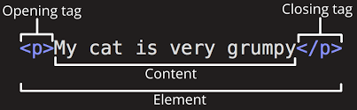

Proper HTML style is important
I'm going to be honest, this assignment was the most painful one yet. It has been a struggle with Github Super Linter, but I finally worked things out after hours of doing and re-doing the indentation. To say the least, Unit1-03 was a learning experience.